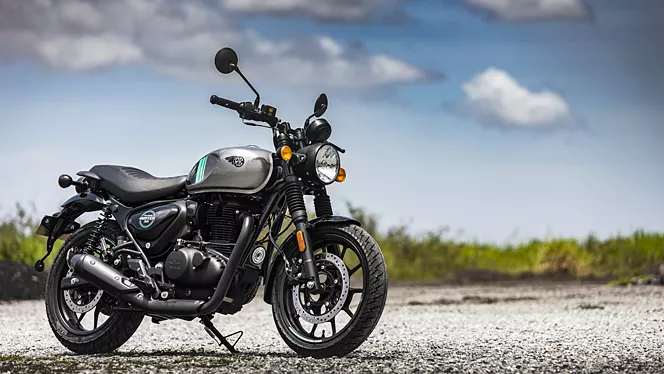

ROYAL ENFIELD HUNTER 350

Bore / stroke: 75 x 85.5(mm)
Compression ratio: 9.5:1
Engine: Air-oil cooled Single cylinder, 4-stroke, ECU Controlled, 349cc
Fuel capacity: 13 ± 0.5 litres
Seat height: 790(mm)
Top speed: 120 km/h
Torque: 27Nm@4000 rpm